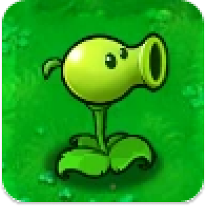
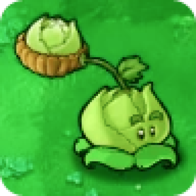
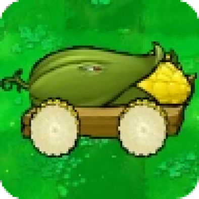

Существует огромное количество разнообразных растений со своими особенностями. Они
стреляют горошинами, шипами, звездами, маслом, кукурузы, запускают овощи и другие снаряды отростками в виде
катапульт, вырабатывают солнце и монеты, или предназначены мгновенно уничтожать зомби, взрывая группу или
ряд зомби, а также сжигать, замедлять, гипнотизировать или замораживать противников. Их можно выращивать
в Саду Дзен, получая при уходе за ними монеты, пакеты с подкормкой, доступ к уровням некоторых локаций или
другие бонусы, зависящие от игры, а также продавать выращенные экземпляры Безумному Дейву за определённую
сумму.
Топ Растений

Горохострел
Первое появление:
Уровень 1-1
Перезарядка:
Быстрая
Урон:
Нормальный
Стоимость:
100 солнц
Особенность:
Атакует горошинами

Капустопульта
Первое появление:
После прохождения уровня 4-10
Перезарядка:
Быстрая
Урон:
Нормальный
Особенность:
Атакует кочанами капусты

Початочная пушка
Первое появление:
Магазин "Твиддидинки"
Перезарядка:
Очень медленная
Урон:
Массивный
Особенность:
Запускает початки кукурузы
Гипногриб
Первое появление:
После прохождения уровня 2-5
Перезарядка:
Медленная
Особенность:
Зомби, который его съел будет есть других зомби линии